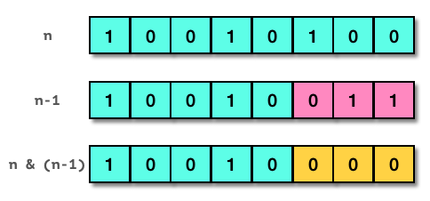
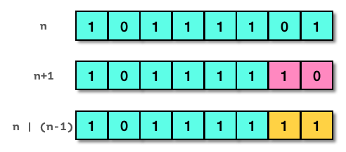
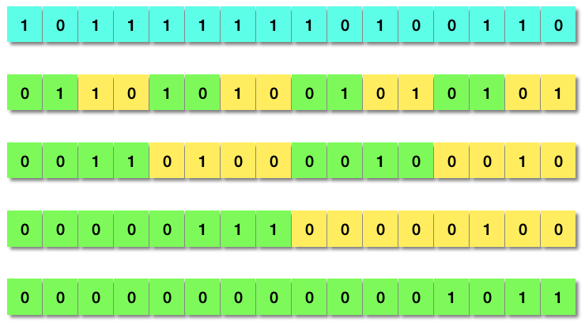

程序员面试题精解（1）— 比特位计数
现代计算机的硬件设计建立于数字电路的基础之上，而数字电路采用以2为基数的二进制记数系统。由此，二进制及其数字位（称为比特）的运算构成计算机系统软件的基石。一个常见的程序员面试题，就是比特位计数，即计算给定整数的二进制表示中比特1的个数。
这并不是一道很难的题目，但是要给出令人印象深刻的答案，却需要对二进制及比特位运算的深入理解，以及坚实的系统编程技巧和经验。实际上，比特位计数功能有悠久的历史。在早期的晶体管计算机时代，就有专门执行该功能的指令。如果主机的CPU指令集不支持此类指令，就必须使用软件代码实现。由于这一功能也常常被称为“种群统计”（population count），本文中所有解法的函数命名都以popcount_为前缀。下面我们来解析和评介这一面试题的各种解法和C语言实现。
常规解法
常规的解法是每一个初级程序员都必须掌握的。以32位整数2418146236为例，
- 十六进制表示：0x9021FBBC
- 二进制表示：0b 10010000 00100001 11111011 10111100
- 比特1的个数：16
如果熟悉基本的比特位运算操作（取反、与、或、异或、左/右移位），就可以很快找到一个解题的思路：生成一个单比特数0b1，将它与要计数的整数做位与运算，结果为1说明整数最右边的比特为1，否则为0；将此单比特数左移一位得到0b10，再与原整数做位与运算，用结果判定从右边起的第二位比特是否为1；重复此左移和位与运算，就能够从右到左扫描到所有的比特1并计数。如下的代码实现了这一简单直接的解法：
1 | int popcount_common1 (uint32_t n) |
可以看到，这种解法的运算量只取决于输入整数类型的总比特数，而与整数本身的数值无关。如上的函数定义，因为输入为32位无符号数，所以代码中循环和移位次数也为32。
与之类似的解法，是固定单比特数0b1，而将输入整数逐次右移，这样所有的高位比特都可以移到最右边来检测。利用比特位右移运算时最左边补上符号位的特点，此解法可能不需要循环32次而提前结束，循环的次数等于最高位比特1与最右边比特的比特距离。以下的代码展示了这一解法：
1 | int popcount_common2 (uint32_t n) |
对于上面的第二种常规解法的C函数实现，有三点要提醒注意：
- 解法利用了右移时最左边补上符号位0的特点，所以可以根据移位后数是否为0，来确定需不需要提前结束循环。这是优于第一种常规解法的地方。但是也由此限定了输入n必须为无符号数，否则当输入为负数时，右移时最左边的符号位会移到数据位，而且还会又补上符号位1。这样最终n会变为0xFFFFFFFF，程序落入死循环！解决此问题的办法是，如果函数定义的输入是
int32_t，要先将之强制类型赋值到无符号数uint32_t，再执行相同的检测和计数步骤。基于此处理，本文余下内容所提到的整数皆为无符号数。 - 以上代码第5行不是应该写成
if (n & 1) c++;吗？为什么变成c += n & 1;？其实两种写法结果一样，但实际中后者可能会优于前者。现代计算机处理器都是基于流水线（pipeline）的设计以提高指令执行速度，而if语句编译成的分支指令，会造成流水线冲突而拉低执行效率。当然，依赖于特定的计算机体系结构和编译器优化能力，这一区别也有可能太小乃至可以忽略不计。 - 以上代码第6行右移一位，等价于将整数除以2。那么请问可以把它写成
n /= 2;吗？绝对不行！这是面试官设置的陷阱。只要学过计算机组成的基础知识，就应该知道除法的执行效率远低于移位运算，所以实际中要尽量避免使用除法。
快速解法
实现常规解法可以验证面试者是否拥有初级程序员的基本技能。然而，对于中高级程序员的职位，面试官会要求效率更高的解法。那么，存在更快的解法吗？答案是肯定的。
考虑一个单字节8比特的整数n, 其数值为0x94，以二进制表示为0b10010100。如下图所示，如果将n减去1，得到0b10010011，即0x93。仔细观察二者的区别，减1后原整数最右边的比特1及后面的比特0全部取反，而其之前的比特位均保持不变。这时，如果将二者做位与运算，结果是0b10010000（0x90），最右的比特1被清除了！重复减1后位与操作，会得到0b10000000 (0x80)，原整数从右边数第二个比特1被清除了。第三次同样的操作完成，得到0，即原来的全部三个比特1都被清零。

总结这一规律：将一个整数减去1，再同原整数做位与运算，得到的结果等于原整数最右边的比特1清零；在最终结果变成0之前，能重复进行这样的操作的次数，就是原整数中比特1的数目。基于这一规律，我们可以写出新的计数函数代码：
1 | int popcount_fast1 (uint32_t n) |
毫无疑问，由于循环的次数取决于比特1的数目，这种解法当然比常规解法要快。在比特1个数不多的场合，这是优选的快速解法。
无独有偶，还有一种与之对称的解法，适用于比特1个数较多（即比特0较少）的情况。参考下图，整数数值为0xBD，二进制表示为0b10111101。如果将n加上1，得到0b10111110，即0xBE。对比二者，加1后原整数最右边的比特0及后面的比特1全部取反，而其之前的比特位均保持不变。这时，如果将二者做位或运算，结果是0b10111111（0xBF），最右的比特0被置位了！重复加1后位与操作，会得到0b11111111 (0xFF)，原整数从右边数第二个比特0被置位了。这时原来的全部两个比特0都被置位，解法终止，原整数中比特1的个数等于总比特数减去重复操作的次数。

总结新的规律：将一个整数加上1，再同原整数做位或运算，得到的结果等于原整数最右边的比特0置位；在最终结果变成全比特1（等同于有符号数-1）之前，能重复进行这样的操作的次数，就是原整数中比特0的数目，而原整数中比特1的个数等于总比特数减去比特0的数目。这一规律对应的计数函数代码如下：
1 | int popcount_fast2 (uint32_t n) |
同理，由于循环的次数取决于比特0的数目，在比特1个数较多的场合，这是优选的快速解法。
在具体的应用场景中，如果要处理的数据量很大，达到GB甚至TB量级，并且已知绝大部分数值的比特1个数都是较少（或较多）的状况，还可以将循环语句展开，进一步加快运行速度。
以上两种快速解法的循环展开实现如下。代码先定义宏f(x)和g(x)用来检测结果并即时返回计数值，然后在函数实现中拿掉while循环，取而代之的是分别反复调用f(x)和g(x)。在任何一步满足if条件为真，就会马上返回。这实际上是一种以空间换时间的方案。虽然函数代码及编译后的指令数目会增加不少，但是在运行过程中，因为每次检测都减少了一个算术运算指令（用于更新计数变量），所以运行会更快。
1 | /* If most bits are 0, use the following unrolled solution.*/ |
分而治之
如前所述，快速解法是比特1个数较少或较多的情况下的优选。在平均计数值为总比特数的一半时，仍然需要相当多的指令完成任务。对于前例的popcount_fast1和popcount_fast2函数，平均需要循环16次，每次执行三次算术运算和一次比较/分支操作，最少64条操作指令。还有没有更好的、需要更少指令的通用解法呢？
当然有！早在40多年以前，三位美国计算机科学家Reingold、Nievergelt和Deo所著的《组合算法：理论和实践》1一书中，就详细讨论了一种应用“分而治之”（Divide and Conquer）策略的解法。这种解法是如此精妙，乃至应该将其升格以算法称呼才合适。下图演示了以16位的双字节数0xBFA6为例的计算过程，算法首先把相邻的两个比特位组合为一个位段，将这两个比特位的值相加，结果置于这个宽度为2的比特位段中。下一步把相邻的两个双比特位段的值相加，结果置于宽度为4的比特位段中。以此类推，四步之后就得到数值11（0x000B），正好就是原整数中比特1的总数。

这一看似帽子戏法的算法，是“分而治之”策略的典型应用。一个16位整数的比特1计数问题，被转化为两个8位整数的计数问题，分别解决后再将结果相加合并。递归运用此策略，直至分解到单个比特计数的问题。然后反复运用并行位运算求解再合并，即可求出最终的计数值。很明显，给定N比特位整数，此算法的时间复杂性是\(O(\log N)\)。
对于32位的整数，上图中的算法用C语言写出来就是：
1 | /* Divide-and-Conquer - original (20 arithmetic operations) */ |
值得说明的一点是，此函数实现中的圆括号都是必要的。这是因为在C语言运算符的优先级次序表里，加减（+、-）要高于移位(<<、>>)，而后者又高于比特位运算（&、^、|）2。在n >> 1两边加圆括号则有助于增强代码的可读性。
另外，函数的第一行（上面代码段行号4）按照算法描述本来应该写成(n & 0xAAAAAAAA) >> 1，之所以这么写是为了避免在寄存器中生成两个大的常数。如果使用0xAAAAAAAA，在不支持单个“and not”指令的计算机里，就必须多耗费一条指令先将0x55555555取反，再与n做位与运算。后面四行的写法也出于同样的考虑。统计下来，这种“分而治之”算法的实现运算量恒定，总共只有20次算术运算操作，运行速度达到了快速解法平均速度的三倍多！
到这里，如果面试者对以上全部的解法都有清晰的思路并写下无错的代码，应该可以得到面试官的首肯。再往下的知识点，就是属于能给面试官带来惊喜的技能了。
锦上添花
问还可以更快吗？
是的，上述“分而治之”算法的代码实现还能进一步优化：
- 仔细审查函数
popcount_dnq1返回语句之前的三行（代码段行号6、7、8），你会发现一些位与操作是多余的。一则，在这些步骤中比特位段求和的结果不可能向左边的比特位段进位；二则，在最后一步，高位的比特值是可忽略的，计数结果只在最右边的m位比特中，这里\(m=\log N+1\)，所以可以省却一个位与运算。 - 函数
popcount_dnq1的第一行（代码段行号4）还有另一种写法，可以减少一次算术运算。其依据是下面的“种群统计”数学公式3： \[\operatorname{popcount}(n)=n-\Bigl\lfloor{\frac{n}{2}}\Bigr\rfloor-\Bigl\lfloor\frac{n}{4}\Bigr\rfloor-\cdots-\Bigl\lfloor\frac{n}{2^{N-1}}\Bigr\rfloor\tag{1}\] N为整数n的比特位数目，\(\lfloor\space\rfloor\)为向下取整操作。此公式的前两项可以用来并行计算宽度为2的比特位段，以一个四比特位数为例： \[\begin{align} n&=a_3⋅2^3+a_2⋅2^2+a_1⋅2^1+a_0⋅2^0\tag{2}\\ \Bigl\lfloor{\frac{n}{2}}\Bigr\rfloor&=a_3⋅2^2+a_2⋅2^1+a_1⋅2^0\tag{3}\\ \Bigl\lfloor{\frac{n}{2}}\Bigr\rfloor\space\&\space0\mathbf{x}5&=a_3⋅2^2+a_1⋅2^0\tag{4}\\ n-(\Bigl\lfloor{\frac{n}{2}}\Bigr\rfloor\space\&\space0\mathbf{x}5)&=a_3⋅(2^3-2^2)+a_2⋅2^2+a_1⋅(2^1-2^0)+a_0⋅2^0\\ &=(a_3+a_2)⋅2^2+(a_1+a_0)⋅2^0\tag{5} \end{align}\] 显然上式（3）等同于将n右移一位。稍加思考，也可以推断出上式（5）得到就是宽度为2的比特位段计数值。依据这一分析，我们可以重写第一行为n = n - ((n >> 1) & 0x55555555);
综合上述两点，优化后的代码如下：
1 | /* Divide-and-Conquer - improved (15 arithmetic operations) */ |
新的popcount_dnq2函数实现比popcount_dnq1少了5个算术运算操作，速度加快了25%。
还有优化的余地吗？
真的有！有经验的系统程序员都知道，许多现代计算机处理器的设计都支持单条乘法指令。由此把一个数乘以0x01010101，等于将其每个长度为8的比特位段相加求和，结果置于最高的字节中，所以只要右移24位就可以得到我们要的计数值。根据这一点，我们可以得到“分而治之”算法的最优实现版本：
1 | /* Divide-and-Conquer - final (12 arithmetic operations) */ |
它只需要12次算术运算操作就完成任务，真的非常快！
使用GCC编译器特定选项，可以生成混合C代码及对照汇编语言的列表（list）文件，用来验证popcount_dnq3实现的优越性。在运行于Intel处理器的Ubuntu Linux x86-64虚拟机上，执行以下命令：
1 | gcc -Wa,-adhln -g -march=native popcount.c > popcount.s |
然后打开产生的列表文件popcount.s，找到popcount_dnq2和popcount_dnq3相关的部分：
1 | 106:popcount.c **** int popcount_dnq2 (uint32_t n) |
可以看到，popcount_dnq2实现里右移8/16位相加各自有三条指令（行号973、974、976和978、979、981），最后的位与0x3F有两条指令（行号983、984），一共8条指令；而在popcount_dnq3实现中只有两条：一条加载指令movl和一条乘法指令imull。popcount_dnq3完胜！
还有一种以空间换时间的“分而治之”方案，虽然看上去比较无趣，但是其执行效率却可与上面的其他算法比肩。这种解决方案预设一个256项的数组，填入0～255之间每个数的比特位计数值，之后对于输入的整数依次取出单个字节查表，然后将结果相加。以下是无比较/分支指令的代码实现：
1 | const char popcount_tab[256] = |
透彻掌握本节的内容，一定可以让面试官对你刮目相看，因为你写出的代码，实现的就是广为认可的高效算法。不信去下载GCC最新的11.1.0版本，看看库文件libgcc/libgcc2.c里的比特位计数函数（复制如下），与前面的代码实质上是一样的：
1 | int |
总结和应用
下表总结比较了本文全部的解法和算法的函数实现：
| 分类 | 函数名 | 方法概要 | 性能 |
|---|---|---|---|
| 常规解法 | popcount_common1 | 从右到左单比特扫描 | 最慢 |
| 常规解法 | popcount_common2 | 输入移位单比特扫描 | 慢 |
| 快速解法 | popcount_fast1 | 减一再位与清零最右1，适用较少1 | 快（非通用） |
| 快速解法 | popcount_fast2 | 加一再位或置位最右0，适用较少0 | 快（非通用） |
| 快速解法 | popcount_fast1_unrolled | fast1循环展开（以空间换时间） | 更快（非通用） |
| 快速解法 | popcount_fast2_unrolled | fast2循环展开（以空间换时间） | 更快（非通用） |
| 分而治之 | popcount_dnq1 | 位段并行计数合并、递归 | 快（通用） |
| 分而治之 | popcount_dnq2 | 位段并行计数合并、递归（优化） | 更快（通用） |
| 分而治之 | popcount_dnq3 | 位段并行计数合并、递归（最优化） | 最快（通用） |
| 分而治之 | popcount_tablelookup | 单字节查表法（以空间换时间） | 最快（通用） |
比特位计数当然不仅仅是用来考验面试者的，它广泛应用于信息学、纠错编码和密码学等多个领域。实际上，“种群统计”就是二进制符号数据的汉明重量4。而两个数据比特串的汉明距离，就定义为二者对应位置上不同比特的个数，即二者相异或后的汉明重量。基于汉明距离的分析是密码分析学的一个关键技术，是历史上破解许多密码的关键。从比特位计数的算法，也衍生出一些快速计算汉明距离的算法，感兴趣者可以留言讨论。
事实上，比特位计数是如此重要，乃至GCC和Clang编译器都提供了内建库函数__builtin_popcount。Intel、AMD和ARM处理器也都为之设定了专门的指令。如下在运行于Intel处理器的Ubuntu Linux x86-64虚拟机上，指定GCC选项-march=native后__builtin_popcount函数编译成单一指令popcntl：
1 | 159:popcount.c **** count = __builtin_popcount(num); |
对比特位计数功能应用方面的了解，有助于扩展知识面，会成为面试时的加分项。
完整程序（包含以上所有计数函数及测试代码）和示例列表文件的压缩包在此下载：popcount.tar.gz